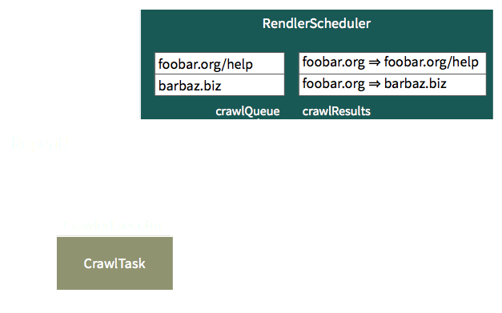
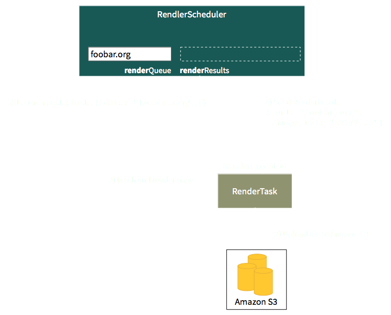

Mesos Frameworks
A quick intro
Mesos Frameworks
RENDLER Example
Advanced Framework Topics
| Request model | 2-level model |

|

|


Mesos Frameworks
RENDLER Example
Advanced Framework Topics
Enter...
The RENDLER

RENDLER is a web crawler and renderer

RENDLER is a distributed web crawler and renderer

Crawling is a closed loop of task generation

Crawling is a closed loop of task generation
Rendering generates pixels, announces result
Scheduler calls
| Lifecycle management | Register, Reregister, Unregister | |
| Resource allocation | Request, Decline, Revive | |
| Task management | Launch, Kill, Reconcile | |
| Communication | sendFrameworkMessage |
Scheduler events
| Lifecycle management | Registered, Reregistered | |
| Resource allocation | Offers, Rescind | |
| Task management | TaskStatus | |
| Communication | frameworkMessage |
TaskInfo describes how to run a task
|
|
Status updates describe the task life cycle
class MyScheduler:
...
def statusUpdate(self, driver, update):
...
# Where update.state can be
# 0: TASK_STARTING
# 1: TASK_RUNNING
# 2: TASK_FINISHED
# 3: TASK_FAILED
# 4: TASK_KILLED
# 5: TASK_LOST
# 6: TASK_STAGING
Executor events
| Lifecycle management | Registered, Reregistered, Disconnected, Shutdown | |
| Task management | launchTask, killTask | |
| Communication | frameworkMessage |
Executor calls
| Task management | sendStatusUpdate | |
| Communication | sendFrameworkMessage |
Mesos Frameworks
RENDLER Example
Advanced Framework Topics
Additional Concerns
- High availability, fault tolerance
- Recover failed or lost tasks
- Framework authentication
- Framework authorization via Master ACL
- Alternative task containerization